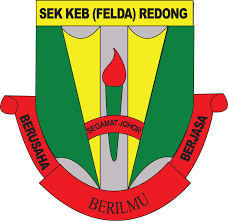
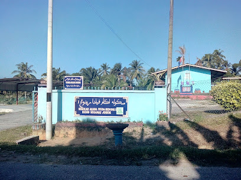

| TYPE | YEAR | LOCATION | |
|---|---|---|---|
| Primary School | 2011-2014 | SK (LKTP) Kechau 1,Kuala Lipis, Pahang |
Sekolah Agama KAFA 8 RAMD, Kuala Lipis, Pahang |
| 2015 - 2016 | SK Felda Redong, Segamat, Johor  |
Sekolah Agama Felda Redong, Segamat, Johor  |
|
| Secondary School | 2017 - 2021 | SMK Dato' Bentara Dalam, Segamat, Johor 🥰 I was accepted into KAA, a religious class that offered Arabic as an additional subject until PT3. 🥰 When i'm Form 4, I was required to take tasawwur, business, and art. Learning Tasawwur is more enjoyable to me than other subject. |
|
| Diploma | 2022 - now | Uitm Segamat, Johor I was offered an Information Managementcourse which must be very lucky for me because this course does not calculations. |
|